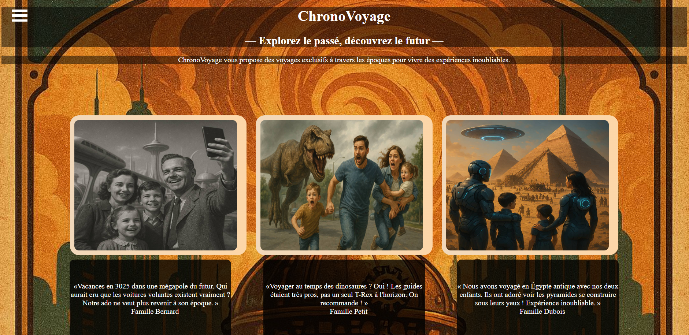

Mes projets

ChronoVoyage
Chonovoyage est un projet personnel en HTML et CSS, créé pour m’entraîner au responsive design et à la mise en page. Ce site fictif présente une agence de voyage dans le temps, avec une image de fond, une navbar en menu burger et quelques avis de voyageurs pour illustrer mes compétences en CSS.
Lien du projet sur Github
DelinkStudio
DelinkStudio est un projet réalisé dans le cadre de ma formation Développeur Front-End. Ce site fictif, développé avec React et SCSS, présente l’univers d’un tatoueur et met en pratique la création d’interfaces dynamiques et stylisées. Le projet intègre notamment des formulaires interactifs pour la prise de contact ou de rendez-vous, démontrant ma capacité à gérer les composants, le state et le style moderne d’un site professionnel.
Lien du projet sur GithubCo2 Web
Dans le cadre de ma formation Développeur Intégrateur, j’ai réalisé un projet de site fictif sur le thème du vélo pour promouvoir une mobilité plus écologique et réduire la pollution. Ce projet, mené en groupe, a été versionné avec Git. J’ai contribué à la création des pages Contact, au README du projet ainsi qu’à un calculateur permettant aux utilisateurs d’estimer l’impact positif de leurs trajets à vélo.
Lien du projet sur Github
×